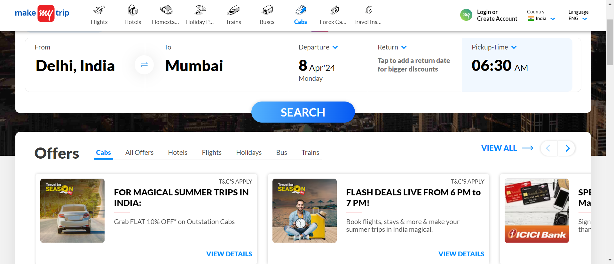
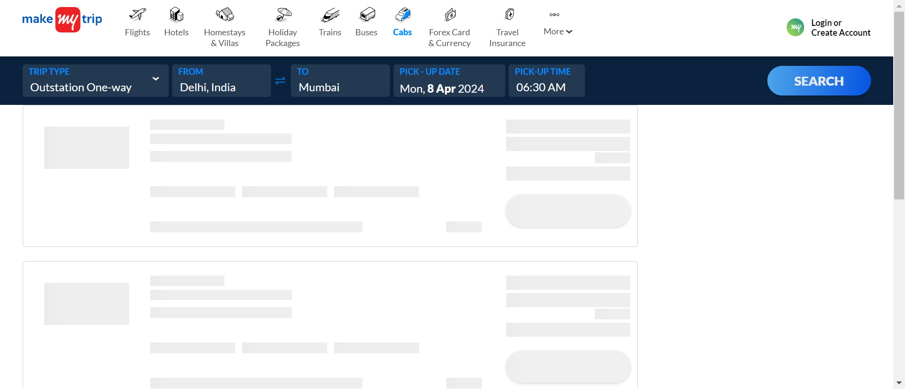
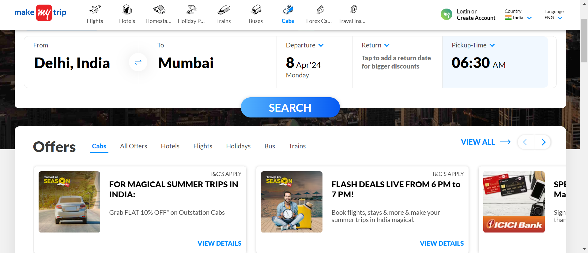
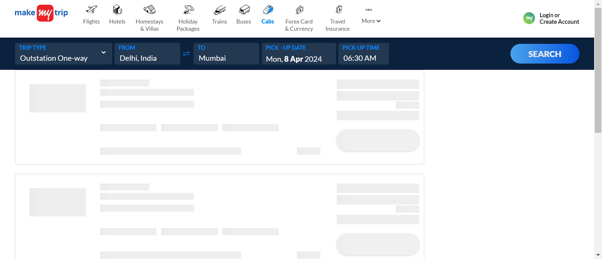

-
Functionality of CabPage
11:39:12 am / 00:04:06:390 Fail
Functionality of CabPage
04.07.2024 11:39:12 am 04.07.2024 11:43:19 am 00:04:06:390 · #test-id=1Pass(2) To verify the enability of OUTSTATION-ONEWAY radio button fieldGiven the user navigates to pagestepDefinitions.Hooks.addScreenshot(io.cucumber.java.Scenario)(2) To verify the enability of OUTSTATION-ONEWAY radio button fieldThen user close the AdsstepDefinitions.Hooks.addScreenshot(io.cucumber.java.Scenario)(2) To verify the enability of OUTSTATION-ONEWAY radio button fieldAnd user click the Cab iconstepDefinitions.Hooks.addScreenshot(io.cucumber.java.Scenario)(2) To verify the enability of OUTSTATION-ONEWAY radio button fieldAnd user click the One-Way cabstepDefinitions.Hooks.addScreenshot(io.cucumber.java.Scenario)(2) To verify the enability of OUTSTATION-ONEWAY radio button fieldAnd check the radio button is enabled.stepDefinitions.Hooks.addScreenshot(io.cucumber.java.Scenario)(2) To verify the enability of OUTSTATION-ONEWAY radio button field Fail(3) To verify the the functionality of "From" dropdown button of the cab webpage with invalid dateGiven the user navigates to pagestepDefinitions.Hooks.addScreenshot(io.cucumber.java.Scenario)(3) To verify the the functionality of "From" dropdown button of the cab webpage with invalid dateThen user close the AdsstepDefinitions.Hooks.addScreenshot(io.cucumber.java.Scenario)(3) To verify the the functionality of "From" dropdown button of the cab webpage with invalid dateAnd user click the Cab iconstepDefinitions.Hooks.addScreenshot(io.cucumber.java.Scenario)(3) To verify the the functionality of "From" dropdown button of the cab webpage with invalid date
Fail(3) To verify the the functionality of "From" dropdown button of the cab webpage with invalid dateGiven the user navigates to pagestepDefinitions.Hooks.addScreenshot(io.cucumber.java.Scenario)(3) To verify the the functionality of "From" dropdown button of the cab webpage with invalid dateThen user close the AdsstepDefinitions.Hooks.addScreenshot(io.cucumber.java.Scenario)(3) To verify the the functionality of "From" dropdown button of the cab webpage with invalid dateAnd user click the Cab iconstepDefinitions.Hooks.addScreenshot(io.cucumber.java.Scenario)(3) To verify the the functionality of "From" dropdown button of the cab webpage with invalid date And user click the One-Way cabstepDefinitions.Hooks.addScreenshot(io.cucumber.java.Scenario)(3) To verify the the functionality of "From" dropdown button of the cab webpage with invalid dateWhen user entered from "txtdsaj"stepDefinitions.Hooks.addScreenshot(io.cucumber.java.Scenario)(3) To verify the the functionality of "From" dropdown button of the cab webpage with invalid dateThen check whether the entered detail is validstepDefinitions.Hooks.addScreenshot(io.cucumber.java.Scenario)(3) To verify the the functionality of "From" dropdown button of the cab webpage with invalid dateFail(4) To verify the the functionality of "To" dropdown button of the cab webpage with invalid dateGiven the user navigates to pagestepDefinitions.Hooks.addScreenshot(io.cucumber.java.Scenario)(4) To verify the the functionality of "To" dropdown button of the cab webpage with invalid dateThen user close the AdsstepDefinitions.Hooks.addScreenshot(io.cucumber.java.Scenario)And user click the Cab iconStep skippedAnd user click the One-Way cabStep skippedWhen user enter from "Delhi"Step skippedAnd user entered to "sdcdrr"Step skippedThen check whether the entered detail is valid.Step skippedPass(5) To verify the enability of OUTSTATION-Round-TRIP radio button fieldGiven the user navigates to pagestepDefinitions.Hooks.addScreenshot(io.cucumber.java.Scenario)(5) To verify the enability of OUTSTATION-Round-TRIP radio button fieldThen user close the AdsstepDefinitions.Hooks.addScreenshot(io.cucumber.java.Scenario)(5) To verify the enability of OUTSTATION-Round-TRIP radio button fieldAnd user click the Cab iconstepDefinitions.Hooks.addScreenshot(io.cucumber.java.Scenario)(5) To verify the enability of OUTSTATION-Round-TRIP radio button field
And user click the One-Way cabstepDefinitions.Hooks.addScreenshot(io.cucumber.java.Scenario)(3) To verify the the functionality of "From" dropdown button of the cab webpage with invalid dateWhen user entered from "txtdsaj"stepDefinitions.Hooks.addScreenshot(io.cucumber.java.Scenario)(3) To verify the the functionality of "From" dropdown button of the cab webpage with invalid dateThen check whether the entered detail is validstepDefinitions.Hooks.addScreenshot(io.cucumber.java.Scenario)(3) To verify the the functionality of "From" dropdown button of the cab webpage with invalid dateFail(4) To verify the the functionality of "To" dropdown button of the cab webpage with invalid dateGiven the user navigates to pagestepDefinitions.Hooks.addScreenshot(io.cucumber.java.Scenario)(4) To verify the the functionality of "To" dropdown button of the cab webpage with invalid dateThen user close the AdsstepDefinitions.Hooks.addScreenshot(io.cucumber.java.Scenario)And user click the Cab iconStep skippedAnd user click the One-Way cabStep skippedWhen user enter from "Delhi"Step skippedAnd user entered to "sdcdrr"Step skippedThen check whether the entered detail is valid.Step skippedPass(5) To verify the enability of OUTSTATION-Round-TRIP radio button fieldGiven the user navigates to pagestepDefinitions.Hooks.addScreenshot(io.cucumber.java.Scenario)(5) To verify the enability of OUTSTATION-Round-TRIP radio button fieldThen user close the AdsstepDefinitions.Hooks.addScreenshot(io.cucumber.java.Scenario)(5) To verify the enability of OUTSTATION-Round-TRIP radio button fieldAnd user click the Cab iconstepDefinitions.Hooks.addScreenshot(io.cucumber.java.Scenario)(5) To verify the enability of OUTSTATION-Round-TRIP radio button field When user click the Outstation Round-TripstepDefinitions.Hooks.addScreenshot(io.cucumber.java.Scenario)(5) To verify the enability of OUTSTATION-Round-TRIP radio button fieldThen check the radio button is enabled.stepDefinitions.Hooks.addScreenshot(io.cucumber.java.Scenario)(5) To verify the enability of OUTSTATION-Round-TRIP radio button field
When user click the Outstation Round-TripstepDefinitions.Hooks.addScreenshot(io.cucumber.java.Scenario)(5) To verify the enability of OUTSTATION-Round-TRIP radio button fieldThen check the radio button is enabled.stepDefinitions.Hooks.addScreenshot(io.cucumber.java.Scenario)(5) To verify the enability of OUTSTATION-Round-TRIP radio button field Pass(7) verify "SORTED BY" list box field from cab webpageGiven the user navigates to pagestepDefinitions.Hooks.addScreenshot(io.cucumber.java.Scenario)(7) verify "SORTED BY" list box field from cab webpage
Pass(7) verify "SORTED BY" list box field from cab webpageGiven the user navigates to pagestepDefinitions.Hooks.addScreenshot(io.cucumber.java.Scenario)(7) verify "SORTED BY" list box field from cab webpage Then user close the AdsstepDefinitions.Hooks.addScreenshot(io.cucumber.java.Scenario)(7) verify "SORTED BY" list box field from cab webpageAnd user click the Cab iconstepDefinitions.Hooks.addScreenshot(io.cucumber.java.Scenario)(7) verify "SORTED BY" list box field from cab webpageAnd user click the One-Way cabstepDefinitions.Hooks.addScreenshot(io.cucumber.java.Scenario)(7) verify "SORTED BY" list box field from cab webpageWhen user enter from "Delhi"stepDefinitions.Hooks.addScreenshot(io.cucumber.java.Scenario)(7) verify "SORTED BY" list box field from cab webpageAnd user enter to "Manali, Himachal Pradesh"stepDefinitions.Hooks.addScreenshot(io.cucumber.java.Scenario)(7) verify "SORTED BY" list box field from cab webpage
Then user close the AdsstepDefinitions.Hooks.addScreenshot(io.cucumber.java.Scenario)(7) verify "SORTED BY" list box field from cab webpageAnd user click the Cab iconstepDefinitions.Hooks.addScreenshot(io.cucumber.java.Scenario)(7) verify "SORTED BY" list box field from cab webpageAnd user click the One-Way cabstepDefinitions.Hooks.addScreenshot(io.cucumber.java.Scenario)(7) verify "SORTED BY" list box field from cab webpageWhen user enter from "Delhi"stepDefinitions.Hooks.addScreenshot(io.cucumber.java.Scenario)(7) verify "SORTED BY" list box field from cab webpageAnd user enter to "Manali, Himachal Pradesh"stepDefinitions.Hooks.addScreenshot(io.cucumber.java.Scenario)(7) verify "SORTED BY" list box field from cab webpage And user enter Departure "Apr 08 2024"stepDefinitions.Hooks.addScreenshot(io.cucumber.java.Scenario)(7) verify "SORTED BY" list box field from cab webpageAnd user enter Pickup Time-Hours "6"stepDefinitions.Hooks.addScreenshot(io.cucumber.java.Scenario)(7) verify "SORTED BY" list box field from cab webpageAnd user enter Pickup Time-Min "30"stepDefinitions.Hooks.addScreenshot(io.cucumber.java.Scenario)(7) verify "SORTED BY" list box field from cab webpage
And user enter Departure "Apr 08 2024"stepDefinitions.Hooks.addScreenshot(io.cucumber.java.Scenario)(7) verify "SORTED BY" list box field from cab webpageAnd user enter Pickup Time-Hours "6"stepDefinitions.Hooks.addScreenshot(io.cucumber.java.Scenario)(7) verify "SORTED BY" list box field from cab webpageAnd user enter Pickup Time-Min "30"stepDefinitions.Hooks.addScreenshot(io.cucumber.java.Scenario)(7) verify "SORTED BY" list box field from cab webpage And user enter Pickup Time-Meridiam "AM"stepDefinitions.Hooks.addScreenshot(io.cucumber.java.Scenario)(7) verify "SORTED BY" list box field from cab webpageThen Click on Apply buttonstepDefinitions.Hooks.addScreenshot(io.cucumber.java.Scenario)(7) verify "SORTED BY" list box field from cab webpageAnd Click on Search buttonstepDefinitions.Hooks.addScreenshot(io.cucumber.java.Scenario)(7) verify "SORTED BY" list box field from cab webpageAnd user select the price lowest to Highest Filter in sort optionstepDefinitions.Hooks.addScreenshot(io.cucumber.java.Scenario)(7) verify "SORTED BY" list box field from cab webpageAnd check that filter is appliedstepDefinitions.Hooks.addScreenshot(io.cucumber.java.Scenario)(7) verify "SORTED BY" list box field from cab webpageFail(8) To verify "Filters" in Cab webpageGiven the user navigates to pagestepDefinitions.Hooks.addScreenshot(io.cucumber.java.Scenario)(8) To verify "Filters" in Cab webpageThen user close the AdsstepDefinitions.Hooks.addScreenshot(io.cucumber.java.Scenario)(8) To verify "Filters" in Cab webpageAnd user click the Cab iconstepDefinitions.Hooks.addScreenshot(io.cucumber.java.Scenario)(8) To verify "Filters" in Cab webpage
And user enter Pickup Time-Meridiam "AM"stepDefinitions.Hooks.addScreenshot(io.cucumber.java.Scenario)(7) verify "SORTED BY" list box field from cab webpageThen Click on Apply buttonstepDefinitions.Hooks.addScreenshot(io.cucumber.java.Scenario)(7) verify "SORTED BY" list box field from cab webpageAnd Click on Search buttonstepDefinitions.Hooks.addScreenshot(io.cucumber.java.Scenario)(7) verify "SORTED BY" list box field from cab webpageAnd user select the price lowest to Highest Filter in sort optionstepDefinitions.Hooks.addScreenshot(io.cucumber.java.Scenario)(7) verify "SORTED BY" list box field from cab webpageAnd check that filter is appliedstepDefinitions.Hooks.addScreenshot(io.cucumber.java.Scenario)(7) verify "SORTED BY" list box field from cab webpageFail(8) To verify "Filters" in Cab webpageGiven the user navigates to pagestepDefinitions.Hooks.addScreenshot(io.cucumber.java.Scenario)(8) To verify "Filters" in Cab webpageThen user close the AdsstepDefinitions.Hooks.addScreenshot(io.cucumber.java.Scenario)(8) To verify "Filters" in Cab webpageAnd user click the Cab iconstepDefinitions.Hooks.addScreenshot(io.cucumber.java.Scenario)(8) To verify "Filters" in Cab webpage And user click the One-Way cabstepDefinitions.Hooks.addScreenshot(io.cucumber.java.Scenario)(8) To verify "Filters" in Cab webpage
And user click the One-Way cabstepDefinitions.Hooks.addScreenshot(io.cucumber.java.Scenario)(8) To verify "Filters" in Cab webpage When user enter from "Delhi"stepDefinitions.Hooks.addScreenshot(io.cucumber.java.Scenario)(8) To verify "Filters" in Cab webpage
When user enter from "Delhi"stepDefinitions.Hooks.addScreenshot(io.cucumber.java.Scenario)(8) To verify "Filters" in Cab webpage And user enter to "Manali, Himachal Pradesh"stepDefinitions.Hooks.addScreenshot(io.cucumber.java.Scenario)(8) To verify "Filters" in Cab webpageAnd user enter Departure "Apr 08 2024"stepDefinitions.Hooks.addScreenshot(io.cucumber.java.Scenario)(8) To verify "Filters" in Cab webpageAnd user enter Pickup Time-Hours "6"stepDefinitions.Hooks.addScreenshot(io.cucumber.java.Scenario)(8) To verify "Filters" in Cab webpageAnd user enter Pickup Time-Min "30"stepDefinitions.Hooks.addScreenshot(io.cucumber.java.Scenario)(8) To verify "Filters" in Cab webpage
And user enter to "Manali, Himachal Pradesh"stepDefinitions.Hooks.addScreenshot(io.cucumber.java.Scenario)(8) To verify "Filters" in Cab webpageAnd user enter Departure "Apr 08 2024"stepDefinitions.Hooks.addScreenshot(io.cucumber.java.Scenario)(8) To verify "Filters" in Cab webpageAnd user enter Pickup Time-Hours "6"stepDefinitions.Hooks.addScreenshot(io.cucumber.java.Scenario)(8) To verify "Filters" in Cab webpageAnd user enter Pickup Time-Min "30"stepDefinitions.Hooks.addScreenshot(io.cucumber.java.Scenario)(8) To verify "Filters" in Cab webpage And user enter Pickup Time-Meridiam "AM"stepDefinitions.Hooks.addScreenshot(io.cucumber.java.Scenario)(8) To verify "Filters" in Cab webpageThen Click on Apply buttonstepDefinitions.Hooks.addScreenshot(io.cucumber.java.Scenario)(8) To verify "Filters" in Cab webpageAnd Click on Search buttonstepDefinitions.Hooks.addScreenshot(io.cucumber.java.Scenario)(8) To verify "Filters" in Cab webpageWhen user Check SUV cab type option in filterstepDefinitions.Hooks.addScreenshot(io.cucumber.java.Scenario)(8) To verify "Filters" in Cab webpageThen check that cab type filter is appliedStep skippedFail(11) To verify the the functionality of "From" dropdown button of the cab webpage with valid datestepDefinitions.Hooks.setup()Given the user navigates to pageStep skippedThen user close the AdsStep skippedAnd user click the Cab iconStep skippedAnd user click the One-Way cabStep skippedWhen user enter from "Delhi"Step skippedAnd user enter to "Manali, Himachal Pradesh"Step skippedThen check the function of Departure date with valid input "May 13 2024"Step skippedFail(12) To verify the the functionality of "From" dropdown button of the cab webpage with invalid datestepDefinitions.Hooks.setup()Given the user navigates to pageStep skippedThen user close the AdsStep skippedAnd user click the Cab iconStep skippedAnd user click the One-Way cabStep skippedWhen user enter from "Delhi"Step skippedAnd user enter to "Manali, Himachal Pradesh"Step skippedThen check the function of Departure date with invalid input "May 13 2023"Step skippedFail(13) To verify the functionality of Return date in "OUTSTATION-round trip" with valid datestepDefinitions.Hooks.setup()Given the user navigates to pageStep skippedThen user close the AdsStep skippedAnd user click the Cab iconStep skippedWhen user click the Outstation Round-TripStep skippedAnd user enter from "Delhi"Step skippedAnd user enter to "Manali, Himachal Pradesh"Step skippedThen check the function of Departure date with valid input "May 13 2024"Step skippedFail(14) To verify the functionality of Return date in "OUTSTATION-round trip" with valid datestepDefinitions.Hooks.setup()Given the user navigates to pageStep skippedThen user close the AdsStep skippedAnd user click the Cab iconStep skippedWhen user click the Outstation Round-TripStep skippedAnd user enter from "Delhi"Step skippedAnd user enter to "Manali, Himachal Pradesh"Step skippedThen check the function of Departure date with invalid input "May 13 2023"Step skipped
And user enter Pickup Time-Meridiam "AM"stepDefinitions.Hooks.addScreenshot(io.cucumber.java.Scenario)(8) To verify "Filters" in Cab webpageThen Click on Apply buttonstepDefinitions.Hooks.addScreenshot(io.cucumber.java.Scenario)(8) To verify "Filters" in Cab webpageAnd Click on Search buttonstepDefinitions.Hooks.addScreenshot(io.cucumber.java.Scenario)(8) To verify "Filters" in Cab webpageWhen user Check SUV cab type option in filterstepDefinitions.Hooks.addScreenshot(io.cucumber.java.Scenario)(8) To verify "Filters" in Cab webpageThen check that cab type filter is appliedStep skippedFail(11) To verify the the functionality of "From" dropdown button of the cab webpage with valid datestepDefinitions.Hooks.setup()Given the user navigates to pageStep skippedThen user close the AdsStep skippedAnd user click the Cab iconStep skippedAnd user click the One-Way cabStep skippedWhen user enter from "Delhi"Step skippedAnd user enter to "Manali, Himachal Pradesh"Step skippedThen check the function of Departure date with valid input "May 13 2024"Step skippedFail(12) To verify the the functionality of "From" dropdown button of the cab webpage with invalid datestepDefinitions.Hooks.setup()Given the user navigates to pageStep skippedThen user close the AdsStep skippedAnd user click the Cab iconStep skippedAnd user click the One-Way cabStep skippedWhen user enter from "Delhi"Step skippedAnd user enter to "Manali, Himachal Pradesh"Step skippedThen check the function of Departure date with invalid input "May 13 2023"Step skippedFail(13) To verify the functionality of Return date in "OUTSTATION-round trip" with valid datestepDefinitions.Hooks.setup()Given the user navigates to pageStep skippedThen user close the AdsStep skippedAnd user click the Cab iconStep skippedWhen user click the Outstation Round-TripStep skippedAnd user enter from "Delhi"Step skippedAnd user enter to "Manali, Himachal Pradesh"Step skippedThen check the function of Departure date with valid input "May 13 2024"Step skippedFail(14) To verify the functionality of Return date in "OUTSTATION-round trip" with valid datestepDefinitions.Hooks.setup()Given the user navigates to pageStep skippedThen user close the AdsStep skippedAnd user click the Cab iconStep skippedWhen user click the Outstation Round-TripStep skippedAnd user enter from "Delhi"Step skippedAnd user enter to "Manali, Himachal Pradesh"Step skippedThen check the function of Departure date with invalid input "May 13 2023"Step skipped
-
java.lang.AssertionError
1 tests
java.lang.AssertionError
1 failedStatus Timestamp TestName Fail 11:40:16 am Then check whether the entered detail is valid Functionality of CabPage.(3) To verify the the functionality of "From" dropdown button of the cab webpage with invalid date.Then check whether the entered detail is valid -
org.openqa.selenium.remote.UnreachableBrowserException
1 tests
org.openqa.selenium.remote.UnreachableBrowserException
1 failedStatus Timestamp TestName Fail 11:43:05 am stepDefinitions.Hooks.setup() Functionality of CabPage.(13) To verify the functionality of Return date in "OUTSTATION-round trip" with valid date.stepDefinitions.Hooks.setup() -
org.openqa.selenium.NoSuchElementException
1 tests
org.openqa.selenium.NoSuchElementException
1 failedStatus Timestamp TestName Fail 11:42:17 am When user Check SUV cab type option in filter Functionality of CabPage.(8) To verify "Filters" in Cab webpage.When user Check SUV cab type option in filter -
org.openqa.selenium.NoSuchWindowException
4 tests
org.openqa.selenium.NoSuchWindowException
4 failedStatus Timestamp TestName Fail 11:40:35 am stepDefinitions.Hooks.addScreenshot(io.cucumber.java.Scenario) Functionality of CabPage.(4) To verify the the functionality of "To" dropdown button of the cab webpage with invalid date.stepDefinitions.Hooks.addScreenshot(io.cucumber.java.Scenario)Fail 11:42:51 am stepDefinitions.Hooks.setup() Functionality of CabPage.(11) To verify the the functionality of "From" dropdown button of the cab webpage with valid date.stepDefinitions.Hooks.setup()Fail 11:42:59 am stepDefinitions.Hooks.setup() Functionality of CabPage.(12) To verify the the functionality of "From" dropdown button of the cab webpage with invalid date.stepDefinitions.Hooks.setup()Fail 11:43:12 am stepDefinitions.Hooks.setup() Functionality of CabPage.(14) To verify the functionality of Return date in "OUTSTATION-round trip" with valid date.stepDefinitions.Hooks.setup()
-
@regression
10 tests
@regression
3 passed 7 failedStatus Timestamp TestName Pass 11:39:12 am (2) To verify the enability of OUTSTATION-ONEWAY radio button field Functionality of CabPage.(2) To verify the enability of OUTSTATION-ONEWAY radio button fieldFail 11:39:37 am (3) To verify the the functionality of "From" dropdown button of the cab webpage with invalid date Functionality of CabPage.(3) To verify the the functionality of "From" dropdown button of the cab webpage with invalid dateFail 11:40:20 am (4) To verify the the functionality of "To" dropdown button of the cab webpage with invalid date Functionality of CabPage.(4) To verify the the functionality of "To" dropdown button of the cab webpage with invalid datePass 11:40:38 am (5) To verify the enability of OUTSTATION-Round-TRIP radio button field Functionality of CabPage.(5) To verify the enability of OUTSTATION-Round-TRIP radio button fieldPass 11:40:57 am (7) verify "SORTED BY" list box field from cab webpage Functionality of CabPage.(7) verify "SORTED BY" list box field from cab webpageFail 11:41:36 am (8) To verify "Filters" in Cab webpage Functionality of CabPage.(8) To verify "Filters" in Cab webpageFail 11:42:51 am (11) To verify the the functionality of "From" dropdown button of the cab webpage with valid date Functionality of CabPage.(11) To verify the the functionality of "From" dropdown button of the cab webpage with valid dateFail 11:42:59 am (12) To verify the the functionality of "From" dropdown button of the cab webpage with invalid date Functionality of CabPage.(12) To verify the the functionality of "From" dropdown button of the cab webpage with invalid dateFail 11:43:05 am (13) To verify the functionality of Return date in "OUTSTATION-round trip" with valid date Functionality of CabPage.(13) To verify the functionality of Return date in "OUTSTATION-round trip" with valid dateFail 11:43:12 am (14) To verify the functionality of Return date in "OUTSTATION-round trip" with valid date Functionality of CabPage.(14) To verify the functionality of Return date in "OUTSTATION-round trip" with valid date
Started
Apr 7, 2024 11:39:11 am
Ended
Apr 7, 2024 11:43:19 am
Features Passed
0
Features Failed
1
Features
Scenarios
Steps
Timeline
Tags
| Name | Passed | Failed | Skipped | Others | Passed % |
|---|---|---|---|---|---|
| @regression | 3 | 7 | 0 | 0 | 30% |